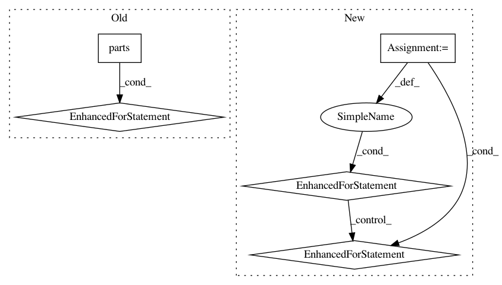

9c05426517a2783d03ec88197b27706e9f877b12,nalaf/preprocessing/parsers.py,SpacyParser,parse,#SpacyParser#Any#,57
Before Change
:type dataset: nalaf.structures.data.Dataset
outer_bar = Bar("Processing [SpaCy]", max=len(list(dataset.parts())))
for part in dataset.parts():
for sent_index, sentence in enumerate(part.sentences):
sentence_tokens = [nalaf_token.word for nalaf_token in sentence]
// Use spacy with custom tokenization.
//
// Info:
// * https://github.com/explosion/spaCy/issues/668
// * https://github.com/explosion/spaCy/issues/245//issuecomment-178014020
// * https://github.com/explosion/spaCy/issues/42//issuecomment-135755528
// * also: https://books.google.de/books?id=1-4lDQAAQBAJ&pg=PA346&lpg=PA346&dq=spacy+tokens_from_list&source=bl&ots=26oMINRNXS&sig=hDDr29jnlKFlMZmfy_5U7XhCia8&hl=en&sa=X&sqi=2&ved=0ahUKEwi9r8P_lNXQAhVBWxoKHV4KDPIQ6AEIPDAF//v=onepage&q=spacy%20tokens_from_list&f=false
// * finally: https://spacy.io/docs/usage/customizing-tokenizer
spacy_doc = self.nlp.tokenizer.tokens_from_list(sentence_tokens)
for pipe in filter(None, self.nlp.pipeline):
pipe(spacy_doc)
for spacy_token in spacy_doc:
assert spacy_token.tag_ != "" and spacy_token.dep_ != "", "The list of tokens was actually not tagged nor parsed"
nalaf_token = part.sentences[sent_index][spacy_token.i]
nalaf_token.features = {
"id": spacy_token.i,
"pos": spacy_token.tag_,
"coarsed_pos": spacy_token.pos_, // https://spacy.io/docs/usage/pos-tagging//pos-tagging-english
"dep": spacy_token.dep_,
"lemma": spacy_token.lemma_,
"prob": spacy_token.prob,
"is_punct": spacy_token.is_punct,
"is_stop": spacy_token.is_stop,
"cluster": spacy_token.cluster,
"dependency_from": None,
"dependency_to": [],
"user_dependency_from": [], // User-defined dependency of any nature
"user_dependency_to": [], // User-defined dependency of any nature
"is_root": False,
}
for spacy_token in spacy_doc:
self._dependency_path(spacy_token, sent_index, part)
part.percolate_tokens_to_entities()
part.compute_tokens_depth()
part.set_entities_head_tokens()
outer_bar.next()
outer_bar.finish()
if self.constituency_parser is True:
self.parser.parse(dataset)
After Change
outer_bar = Bar("Processing [SpaCy]", max=len(dataset.documents))
for docid, document in dataset.documents.items():
for partid, part in document.parts.items():
for sent_index, sentence in enumerate(part.sentences):
sentence_tokens = [nalaf_token.word for nalaf_token in sentence]
// Use spacy with custom tokenization.
//
// Info:
// * https://github.com/explosion/spaCy/issues/668
// * https://github.com/explosion/spaCy/issues/245//issuecomment-178014020
// * https://github.com/explosion/spaCy/issues/42//issuecomment-135755528
// * also: https://books.google.de/books?id=1-4lDQAAQBAJ&pg=PA346&lpg=PA346&dq=spacy+tokens_from_list&source=bl&ots=26oMINRNXS&sig=hDDr29jnlKFlMZmfy_5U7XhCia8&hl=en&sa=X&sqi=2&ved=0ahUKEwi9r8P_lNXQAhVBWxoKHV4KDPIQ6AEIPDAF//v=onepage&q=spacy%20tokens_from_list&f=false
// * finally: https://spacy.io/docs/usage/customizing-tokenizer
spacy_doc = self.nlp.tokenizer.tokens_from_list(sentence_tokens)
for pipe in filter(None, self.nlp.pipeline):
pipe(spacy_doc)
for spacy_token in spacy_doc:
assert spacy_token.tag_ != "" and spacy_token.dep_ != "", "The list of tokens was actually not tagged nor parsed"
nalaf_token = part.sentences[sent_index][spacy_token.i]
nalaf_token.features = {
"id": spacy_token.i,
"pos": spacy_token.tag_,
"coarsed_pos": spacy_token.pos_, // https://spacy.io/docs/usage/pos-tagging//pos-tagging-english
"dep": spacy_token.dep_,
"lemma": spacy_token.lemma_,
"prob": spacy_token.prob,
"is_punct": spacy_token.is_punct,
"is_stop": spacy_token.is_stop,
"cluster": spacy_token.cluster,
"dependency_from": None,
"dependency_to": [],
"user_dependency_from": [], // User-defined dependency of any nature
"user_dependency_to": [], // User-defined dependency of any nature
"is_root": False,
}
for spacy_token in spacy_doc:
self._dependency_path(spacy_token, sent_index, part)
part.percolate_tokens_to_entities()
part.compute_tokens_depth()
part.set_entities_head_tokens()
outer_bar.next()
outer_bar.finish()
if self.constituency_parser is True:
self.parser.parse(dataset)
In pattern: SUPERPATTERN
Frequency: 3
Non-data size: 5
Instances
Project Name: Rostlab/nalaf
Commit Name: 9c05426517a2783d03ec88197b27706e9f877b12
Time: 2017-02-19
Author: i@juanmi.rocks
File Name: nalaf/preprocessing/parsers.py
Class Name: SpacyParser
Method Name: parse
Project Name: Rostlab/nalaf
Commit Name: a7949425b0ff59786c9baf976e112ac2e07f3f77
Time: 2016-11-03
Author: i@juanmi.rocks
File Name: nalaf/learning/taggers.py
Class Name: StubSameSentenceRelationExtractor
Method Name: annotate
Project Name: Rostlab/nalaf
Commit Name: 88935c4463006f2fe8f2cee1d5b893461589ca24
Time: 2017-03-25
Author: i@juanmi.rocks
File Name: nalaf/structures/data.py
Class Name: Dataset
Method Name: validate_entity_offsets